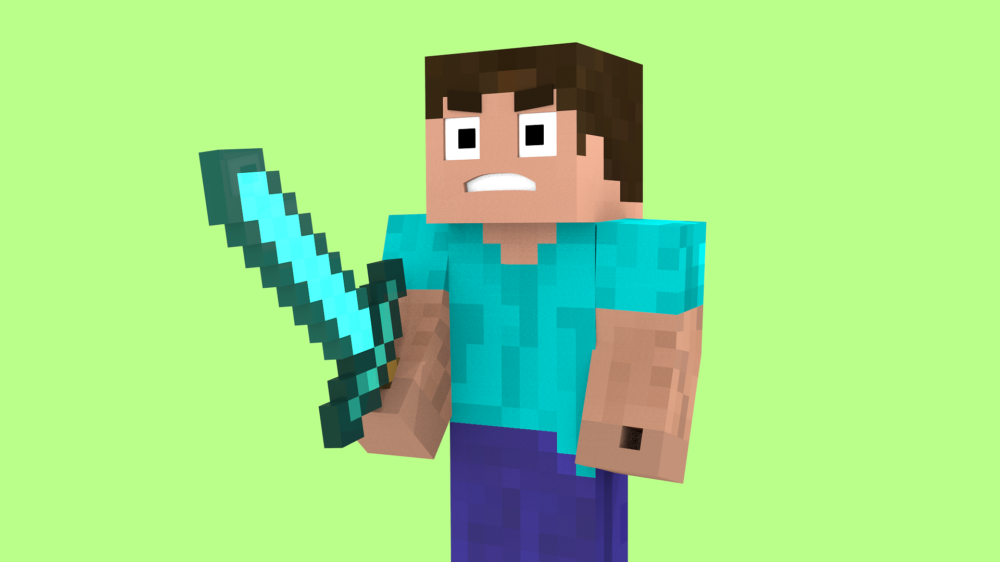

Boost Your Gaming Experience
Mods have become an essential part of modern gaming, transforming ordinary titles into extraordinary adventures. From graphic overhauls to clever quality-of-life improvements, mods allow you to personalize your gameplay and unlock new possibilities. Here’s a closer look at the top 5 must-have mods every gamer should explore—and some practical tips for safe modding along the way.
üé® 1. Visual & Graphics Mods
Want your game to look next-gen? Visual mods offer stunning high-resolution textures, dynamic lighting, and realistic weather effects that completely refresh your favorite titles. Imagine wandering through familiar maps with richer colors and breathtaking scenery—it’s like playing the game for the first time. Just remember to check system requirements, as some graphics mods can be demanding on older hardware.

⚙️ 2. Quality-of-Life Mods
These mods won’t change the storyline or add new levels, but they make everyday gameplay smoother and more enjoyable. Features like customizable HUDs, faster crafting, automatic inventory sorting, and improved camera controls help you focus on what matters most: the game itself. Once you experience these enhancements, it’s hard to go back to the base version.
üß© 3. Gameplay Tweaks & Balance Mods
Not every game feels perfectly balanced out of the box. Gameplay tweak mods let you adjust difficulty, improve enemy AI, rebalance weapons, or change how in-game resources are distributed. Whether you’re looking for a tougher challenge or a more relaxed adventure, these mods help you create the perfect balance to match your playstyle.
✨ 4. Cosmetic & Skin Mods
Show off your creativity with custom character skins, outfits, and weapon designs. Cosmetic mods let you personalize the way your character looks without affecting gameplay mechanics. Always choose trusted sources like ModMorrowind to avoid malware and ensure quality skins that look great in-game.
üó∫ 5. Expansion & Map Mods
These are the crown jewels of the modding world. Expansion mods can introduce entirely new storylines, quests, or maps—sometimes as detailed as official DLC. They breathe new life into older titles, giving you hours of fresh gameplay and exploration. Some fan-created maps even rival professional game studio work in design and storytelling.
✅ Safe Modding Tips
- Always back up game files before installing new mods.
- Use trusted mod managers to keep track of active mods and updates.
- Check compatibility to avoid conflicts between mods.
- Download mods only from reputable sites like ModMorrowind.
- Stay updated: mod creators often release patches and improvements.
With these must-have mods, you can take your gaming experience to the next level—more beautiful, more immersive, and completely tailored to you. Modding is about creativity, community, and making each game truly your own. Start exploring today, and see just how much your favorite games can evolve!